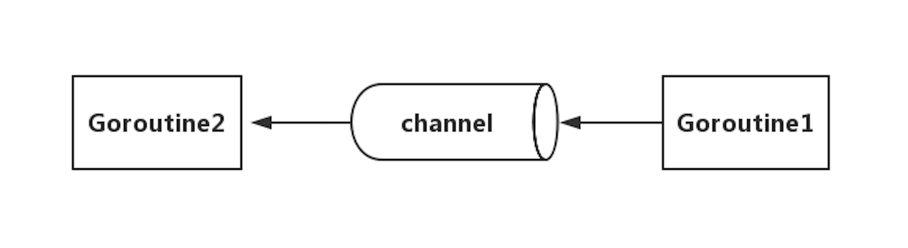
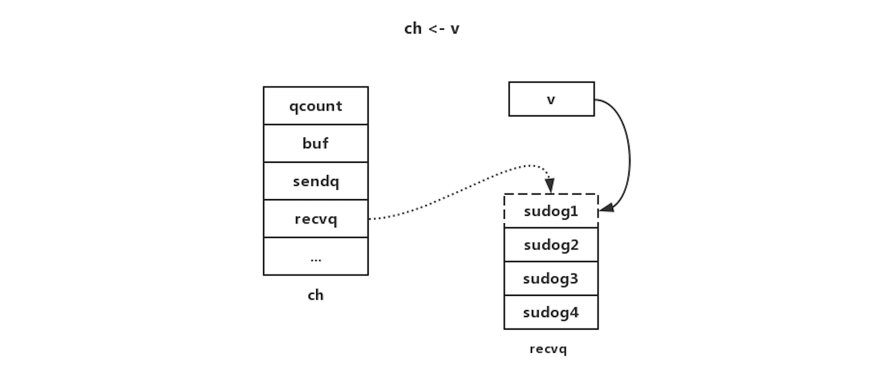
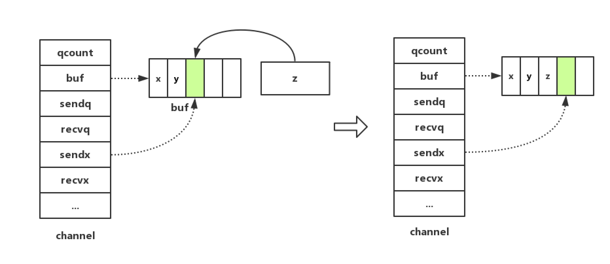
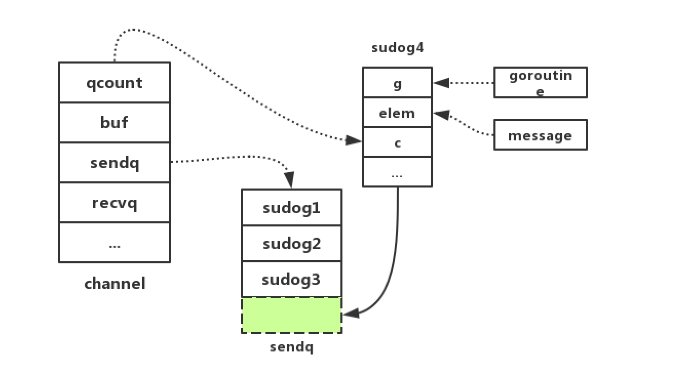
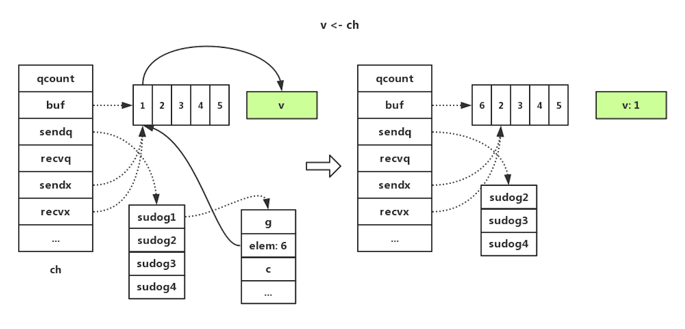
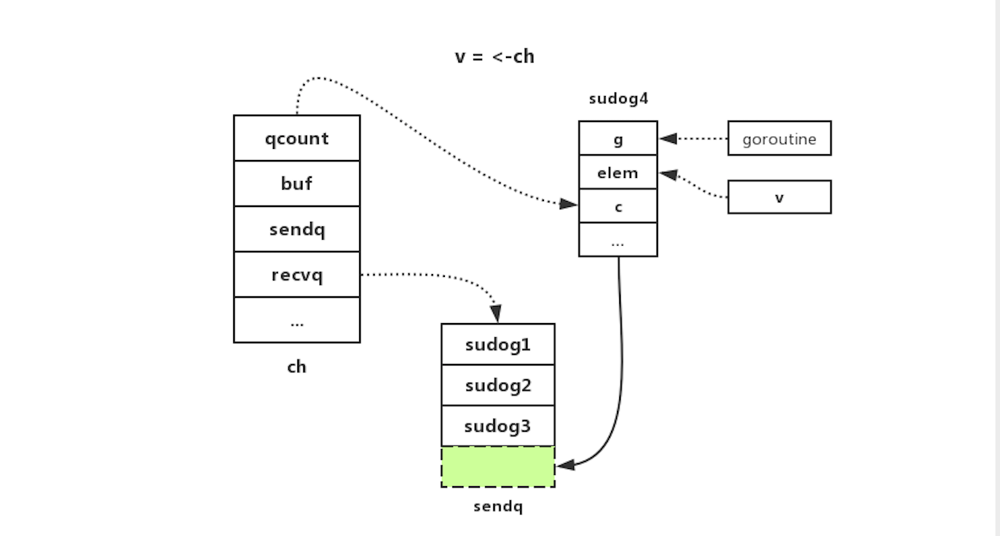

前言
Golang在并发编程上有两大利器，分别是channel和goroutine，这篇文章我们先聊聊channel。熟悉Golang的人都知道一句名言：“使用通信来共享内存，而不是通过共享内存来通信”。这句话有两层意思，Go语言确实在sync包中提供了传统的锁机制，但更推荐使用channel来解决并发问题。这篇文章会先从channel的用法、channel的原理两部分对channel做一个较为深入的探究。
channel用法
什么是channel
从字面上看，channel的意思大概就是管道的意思。channel是一种go协程用以接收或发送消息的安全的消息队列，channel就像两个go协程之间的导管，来实现各种资源的同步。可以用下图示意：

channel的用法很简单：
1 | func main() { |
使用channel时有几个注意点：
- 向一个
nilchannel发送消息，会一直阻塞； - 向一个已经关闭的
channel发送消息，会引发运行时恐慌（panic）； channel关闭后不可以继续向channel发送消息，但可以继续从channel接收消息；- 当
channel关闭并且缓冲区为空时，继续从从channel接收消息会得到一个对应类型的零值。
Unbuffered channels与Buffered channels
Unbuffered channels是指缓冲区大小为0的channel，这种channel的接收者会阻塞直至接收到消息，发送者会阻塞直至接收者接收到消息，这种机制可以用于两个goroutine进行状态同步；Buffered channels拥有缓冲区，发送者在将消息发送到缓冲区之前是阻塞的，当缓冲区已满时，发送者会阻塞；当缓冲区为空时，接收者会阻塞。
引用The Nature Of Channels In Go中的两张图来说明Unbuffered channels与Buffered channels， 非常形象，读者可自行体会一下：
Unbuffered channels：
Buffered channels：
channel的遍历
for range
channel支持 for range 的方式进行遍历：
1 | package main |
值得注意的是，在遍历时，如果channel 没有关闭，那么会一直等待下去，出现 deadlock 的错误；如果在遍历时channel已经关闭，那么在遍历完数据后自动退出遍历。也就是说，for range 的遍历方式时阻塞型的遍历方式。
for select
select可以处理非阻塞式消息发送、接收及多路选择。1
2
3
4
5
6
7
8
9
10
11
12
13
14
15
16
17
18
19
20
21
22
23
24
25
26
27
28
29
30
31
32
33
34
35
36
37
38
39
40
41package main
import "fmt"
func main() {
ci := make(chan int, 2)
for i := 1; i <= 2; i++ {
ci <- i
}
close(ci)
cs := make(chan string, 2)
cs <- "hi"
cs <- "golang"
close(cs)
ciClosed, csClosed := false, false
for {
if ciClosed && csClosed {
return
}
select {
case i, ok := <-ci:
if ok {
fmt.Println(i)
} else {
ciClosed = true
fmt.Println("ci closed")
}
case s, ok := <-cs:
if ok {
fmt.Println(s)
} else {
csClosed = true
fmt.Println("cs closed")
}
default:
fmt.Println("waiting...")
}
}
}
select中有case代码块，用于channel发送或接收消息，任意一个case代码块准备好时，执行其对应内容；多个case代码块准备好时，随机选择一个case代码块并执行；所有case代码块都没有准备好，则等待；还可以有一个default代码块，所有case代码块都没有准备好时执行default代码块。
channel原理
先贴一下channel的源码地址，读者可以对照来看。
数据结构
先看channel的结构体：1
2
3
4
5
6
7
8
9
10
11
12
13
14
15
16
17
18
19
20
21
22
23type hchan struct {
qcount uint // total data in the queue
dataqsiz uint // size of the circular queue
buf unsafe.Pointer // points to an array of dataqsiz elements
// channel中元素大小
elemsize uint16
// 是否已关闭
closed uint32
// channel中元素类型
elemtype *_type // element type
sendx uint // send index
recvx uint // receive index
recvq waitq // list of recv waiters
sendq waitq // list of send waiters
// lock protects all fields in hchan, as well as several
// fields in sudogs blocked on this channel.
//
// Do not change another G's status while holding this lock
// (in particular, do not ready a G), as this can deadlock
// with stack shrinking.
lock mutex
}
channel的缓冲区其实是一个环形队列，qcount表示队列中元素的数量，dataqsiz表示环形队列的总大小，buf表示一个指向循环数组的指针；sendx和recvx分别用来标识当前发送和接收的元素在循环队列中的位置；recvq和sendq都是一个列表，分别用于存储当前处于等待接收和等待发送的Goroutine。
再看一下waitq的数据结构：
1 | type waitq struct { |
其中sudog表示处于等待列表中的Goroutine封装，包含了一些上下文信息，first和last分别指向等待列表的首位的Goroutine。
编译分析
在分析channel的原理之前，我们先使用go tool分析以下代码，看看channel的各种操作在底层调用了什么运行时方法：
1 | ch := make(chan int, 2) |
编译1
2go build test.go
go tool objdump -s "main\.main" test | grep CALL
把CALL过滤出来：
1 | test.go:118 0x1092f55 e81612f7ff CALL runtime.makechan(SB) |
创建
从上面的编译分析可以看出在创建channel时调用了运行时方法makechan:
1 | func makechan(t *chantype, size int) *hchan { |
makechan的代码逻辑还是比较简单的，首先校验元素类型和缓冲区空间大小，然后创建hchan，分配所需空间。这里有三种情况：当缓冲区大小为0，或者channel中元素大小为0时，只需分配channel必需的空间即可；当channel元素类型不是指针时，则只需要为hchan和缓冲区分配一片连续内存空间，空间大小为缓冲区数组空间加上hchan必需的空间；默认情况，缓冲区包含指针，则需要为hchan和缓冲区分别分配内存。最后更新hchan的其他字段，包括elemsize，elemtype，dataqsiz。
发送
channel的发送操作调用了运行时方法chansend1, 在chansend1内部又调用了chansend，直接来看chansend的实现：1
2
3
4
5
6
7
8
9
10
11
12
13
14
15
16
17
18
19
20
21
22
23
24
25
26
27
28
29
30
31
32
33
34
35
36
37
38
39
40
41
42
43
44
45
46
47
48
49
50
51
52
53
54
55
56
57
58
59
60
61
62
63
64
65
66
67
68
69
70
71
72
73
74
75
76
77
78
79
80
81
82
83
84
85
86
87
88
89
90
91
92
93
94
95
96
97
98
99
100
101
102
103
104
105
106
107
108
109
110
111
112
113
114
115
116
117
118
119
120
121
122
123
124
125
126
127
128
129
130
131func chansend(c *hchan, ep unsafe.Pointer, block bool, callerpc uintptr) bool {
// channel为nil
if c == nil {
// 如果是非阻塞，直接返回发送不成功
if !block {
return false
}
// 否则，当前Goroutine阻塞挂起
gopark(nil, nil, waitReasonChanSendNilChan, traceEvGoStop, 2)
throw("unreachable")
}
if debugChan {
print("chansend: chan=", c, "\n")
}
if raceenabled {
racereadpc(c.raceaddr(), callerpc, funcPC(chansend))
}
// Fast path: check for failed non-blocking operation without acquiring the lock.
// 对于非阻塞且channel未关闭，如果无缓冲区且没有等待接收的Goroutine，或者有缓冲区且缓冲区已满，那么都直接返回发送不成功
if !block && c.closed == 0 && ((c.dataqsiz == 0 && c.recvq.first == nil) ||
(c.dataqsiz > 0 && c.qcount == c.dataqsiz)) {
return false
}
var t0 int64
if blockprofilerate > 0 {
t0 = cputicks()
}
// 加锁
lock(&c.lock)
// 如果channel已关闭
if c.closed != 0 {
// 解锁，直接panic
unlock(&c.lock)
panic(plainError("send on closed channel"))
}
// 除了以上情况，当channel未关闭时，就有以下几种情况：
// 1、当存在等待接收的Goroutine
if sg := c.recvq.dequeue(); sg != nil {
// Found a waiting receiver. We pass the value we want to send
// directly to the receiver, bypassing the channel buffer (if any).
// 那么直接把正在发送的值发送给等待接收的Goroutine
send(c, sg, ep, func() { unlock(&c.lock) }, 3)
return true
}
// 2、当缓冲区未满时
if c.qcount < c.dataqsiz {
// Space is available in the channel buffer. Enqueue the element to send.
// 获取指向缓冲区数组中位于sendx位置的元素的指针
qp := chanbuf(c, c.sendx)
if raceenabled {
raceacquire(qp)
racerelease(qp)
}
// 将当前发送的值拷贝到缓冲区
typedmemmove(c.elemtype, qp, ep)
// sendx索引加一
c.sendx++
// 因为是循环队列，sendx等于队列长度时置为0
if c.sendx == c.dataqsiz {
c.sendx = 0
}
// 队列中元素总数加一，并解锁，返回发送成功
c.qcount++
unlock(&c.lock)
return true
}
// 3、当既没有等待接收的Goroutine，缓冲区也没有剩余空间，如果是非阻塞的发送，那么直接解锁，返回发送失败
if !block {
unlock(&c.lock)
return false
}
// Block on the channel. Some receiver will complete our operation for us.
// 4、如果是阻塞发送，那么就将当前的Goroutine打包成一个sudog结构体，并加入到channel的发送队列sendq里
gp := getg()
mysg := acquireSudog()
mysg.releasetime = 0
if t0 != 0 {
mysg.releasetime = -1
}
// No stack splits between assigning elem and enqueuing mysg
// on gp.waiting where copystack can find it.
mysg.elem = ep
mysg.waitlink = nil
mysg.g = gp
mysg.isSelect = false
mysg.c = c
gp.waiting = mysg
gp.param = nil
c.sendq.enqueue(mysg)
// 调用goparkunlock将当前Goroutine设置为等待状态并解锁，进入休眠等待被唤醒
goparkunlock(&c.lock, waitReasonChanSend, traceEvGoBlockSend, 3)
// Ensure the value being sent is kept alive until the
// receiver copies it out. The sudog has a pointer to the
// stack object, but sudogs aren't considered as roots of the
// stack tracer.
KeepAlive(ep)
// someone woke us up.
// 被唤醒之后执行清理工作并释放sudog结构体
if mysg != gp.waiting {
throw("G waiting list is corrupted")
}
gp.waiting = nil
if gp.param == nil {
if c.closed == 0 {
throw("chansend: spurious wakeup")
}
panic(plainError("send on closed channel"))
}
gp.param = nil
if mysg.releasetime > 0 {
blockevent(mysg.releasetime-t0, 2)
}
mysg.c = nil
releaseSudog(mysg)
return true
}
chansend的执行逻辑，上面的注释已经写得很清楚了，我们再来梳理一下。对于非阻塞发送或者channel已经关闭条件下的几种发送失败的情况，处理逻辑比较简单，读者可以对照注释来看；这里我们重点关注channel未关闭时几种常规情况：
存在等待接收的Goroutine
如果等待接收的队列recvq中存在Goroutine，那么直接把正在发送的值发送给等待接收的Goroutine。示意图如下：

具体看一下send方法：
1 | func send(c *hchan, sg *sudog, ep unsafe.Pointer, unlockf func(), skip int) { |
这里有必要说明一下Goroutine在调度过程中的几种状态：
1 | _Gidle = iota // goroutine刚刚分配，还没有初始化 |
当调用goready时，将Goroutine的状态从 _Gwaiting置为_Grunnable，等待下一次调度再次执行。
当缓冲区未满时
当缓冲区未满时，找到sendx所指向的缓冲区数组的位置，将正在发送的值拷贝到该位置，并增加sendx索引以及释放锁，示意图如下：

阻塞发送
如果是阻塞发送，那么就将当前的Goroutine打包成一个sudog结构体，并加入到channel的发送队列sendq里。示意图如下：

之后则调用goparkunlock将当前Goroutine设置为_Gwaiting状态并解锁，进入阻塞状态等待被唤醒（调用goready）；如果被调度器唤醒，执行清理工作并最终释放对应的sudog结构体。
接收
channel的接收有两种形式：
1 | <-ch |
这两种方式分别调用运行时方法chanrecv1和chanrecv2:
1 | func chanrecv1(c *hchan, elem unsafe.Pointer) { |
这两个方法最终都会调用chanrecv方法：1
2
3
4
5
6
7
8
9
10
11
12
13
14
15
16
17
18
19
20
21
22
23
24
25
26
27
28
29
30
31
32
33
34
35
36
37
38
39
40
41
42
43
44
45
46
47
48
49
50
51
52
53
54
55
56
57
58
59
60
61
62
63
64
65
66
67
68
69
70
71
72
73
74
75
76
77
78
79
80
81
82
83
84
85
86
87
88
89
90
91
92
93
94
95
96
97
98
99
100
101
102
103
104
105
106
107
108
109
110
111
112
113
114
115
116
117
118
119
120
121
122
123
124
125
126
127
128
129
130
131
132
133
134
135
136func chanrecv(c *hchan, ep unsafe.Pointer, block bool) (selected, received bool) {
if debugChan {
print("chanrecv: chan=", c, "\n")
}
// channel为nil
if c == nil {
// 非阻塞直接返回（false, false）
if !block {
return
}
// 阻塞接收，则当前Goroutine阻塞挂起
gopark(nil, nil, waitReasonChanReceiveNilChan, traceEvGoStop, 2)
throw("unreachable")
}
// Fast path: check for failed non-blocking operation without acquiring the lock.
// 非阻塞模式，对于以下两种情况：
// 1、无缓冲区且等待发送队列也为空
// 2、有缓冲区但缓冲区数组为空且channel未关闭
// 这两种情况都是接收失败, 直接返回（false, false）
if !block && (c.dataqsiz == 0 && c.sendq.first == nil ||
c.dataqsiz > 0 && atomic.Loaduint(&c.qcount) == 0) &&
atomic.Load(&c.closed) == 0 {
return
}
var t0 int64
if blockprofilerate > 0 {
t0 = cputicks()
}
// 加锁
lock(&c.lock)
// 如果channel已关闭，并且缓冲区无元素
if c.closed != 0 && c.qcount == 0 {
if raceenabled {
raceacquire(c.raceaddr())
}
unlock(&c.lock)
// 有等待接收的变量（即 v = <-ch中的v）
if ep != nil {
//根据channel元素的类型清理ep对应地址的内存，即ep接收了channel元素类型的零值
typedmemclr(c.elemtype, ep)
}
// 返回（true, false），即接收到值，但不是从channel中接收的有效值
return true, false
}
// 除了以上非常规情况，还有有以下几种常见情况：
// 1、等待发送的队列sendq里存在Goroutine，那么有两种情况：当前channel无缓冲区，或者当前channel已满
if sg := c.sendq.dequeue(); sg != nil {
// Found a waiting sender. If buffer is size 0, receive value
// directly from sender. Otherwise, receive from head of queue
// and add sender's value to the tail of the queue (both map to
// the same buffer slot because the queue is full).
// 如果无缓冲区，那么直接从sender接收数据；否则，从buf队列的头部接收数据，并把sender的数据加到buf队列的尾部
recv(c, sg, ep, func() { unlock(&c.lock) }, 3)
// 接收成功
return true, true
}
// 2、缓冲区buf中有元素
if c.qcount > 0 {
// Receive directly from queue
// 从recvx指向的位置获取元素
qp := chanbuf(c, c.recvx)
if raceenabled {
raceacquire(qp)
racerelease(qp)
}
if ep != nil {
// 将从buf中取出的元素拷贝到当前协程
typedmemmove(c.elemtype, ep, qp)
}
// 同时将取出的数据所在的内存清空
typedmemclr(c.elemtype, qp)
// 接收索引 +1
c.recvx++
if c.recvx == c.dataqsiz {
c.recvx = 0
}
// buf元素总数 -1
c.qcount--
// 解锁，返回接收成功
unlock(&c.lock)
return true, true
}
// 3、非阻塞模式，且没有数据可以接受
if !block {
// 解锁，直接返回接收失败
unlock(&c.lock)
return false, false
}
// no sender available: block on this channel.
// 4、阻塞模式，获取当前Goroutine，打包一个sudog
gp := getg()
mysg := acquireSudog()
mysg.releasetime = 0
if t0 != 0 {
mysg.releasetime = -1
}
// No stack splits between assigning elem and enqueuing mysg
// on gp.waiting where copystack can find it.
mysg.elem = ep
mysg.waitlink = nil
gp.waiting = mysg
mysg.g = gp
mysg.isSelect = false
mysg.c = c
gp.param = nil
// 加入到channel的等待接收队列recvq中
c.recvq.enqueue(mysg)
// 挂起当前Goroutine，设置为_Gwaiting状态并解锁，进入休眠等待被唤醒
goparkunlock(&c.lock, waitReasonChanReceive, traceEvGoBlockRecv, 3)
// someone woke us up
// 被唤醒之后执行清理工作并释放sudog结构体
if mysg != gp.waiting {
throw("G waiting list is corrupted")
}
gp.waiting = nil
if mysg.releasetime > 0 {
blockevent(mysg.releasetime-t0, 2)
}
closed := gp.param == nil
gp.param = nil
mysg.c = nil
releaseSudog(mysg)
return true, !closed
}
chanrecv方法的处理逻辑与chansend非常类似，我们这里仍然只分析几种常见情况，其他情况上述注释也解释得比较清楚了，读者可对照相应代码和注释查看。
存在等待发送的Goroutine
如果等待发送的队列sendq里存在挂起的Goroutine，那么有两种情况：当前channel无缓冲区，或者当前channel已满。从sendq中取出最先阻塞的Goroutine，然后调用recv方法：
1 | func recv(c *hchan, sg *sudog, ep unsafe.Pointer, unlockf func(), skip int) { |
1、如果无缓冲区，那么直接从sender接收数据；
2、如果缓冲区已满，从buf队列的头部接收数据，并把sender的数据加到buf队列的尾部；
3、最后调用goready函数将等待发送数据的Goroutine的状态从_Gwaiting置为_Grunnable，等待下一次调度。
下图示意了当缓冲区已满时的处理过程：

缓冲区buf中还有数据
如果缓冲区buf中还有元素，那么就走正常的接收，将从buf中取出的元素拷贝到当前协程的接收数据目标内存地址中。值得注意的是，即使此时channel已经关闭，仍然可以正常地从缓冲区buf中接收数据。这种情况比较简单，示意图就不画了。
阻塞接收
如果是阻塞模式，且当前没有数据可以接收，那么就需要将当前Goroutine打包成一个sudog加入到channel的等待接收队列recvq中，将当前Goroutine的状态置为_Gwaiting，等待唤醒。示意图如下：

如果之后当前Goroutine被调度器唤醒，则执行清理工作并最终释放对应的sudog结构体。
关闭
说完收发数据，最后就是关闭channel了：
1 | func closechan(c *hchan) { |
1、关闭channel时，会遍历recvq和sendq（实际只有recvq或者sendq），取出sudog中挂起的Goroutine加入到glist列表中，并清除sudog上的一些信息和状态。
2、然后遍历glist列表，为每个Goroutine调用goready函数，将所有Goroutine置为_Grunnable状态，等待调度。
3、当Goroutine被唤醒之后，会继续执行chansend和chanrecv函数中当前Goroutine被唤醒后的剩余逻辑。
总结
总结一下，本文先通过channel的基本用法对channel的定义、用法细节进行了介绍，然后对channel的基本操作包括发送、接收和关闭进行了较为详细和深入的探究。细心的读者应该也会发现channel的操作跟协程的调度关系密切，不过这篇文章关于goroutine的调度只是一笔带过，后续时机成熟会对这部分内容再作探究。
参考资料
1、The Nature Of Channels In Go
2、Concurrency in Golang